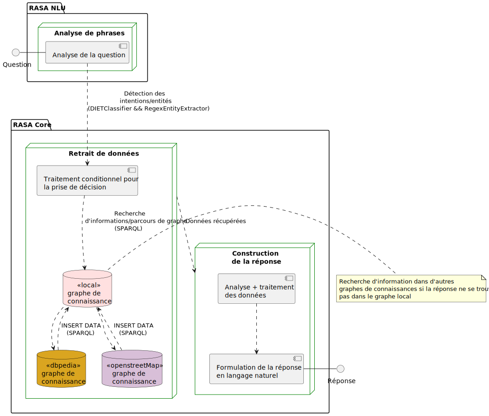

Les données récoltées par le chatbot proviennent de DBpedia, Geonames et openStreetMap
Types de questionsArchitecture
Les types de questions auxquelles le chatbot peut répondre sont les suivantes :
- Donner la liste des restaurants en Suisse. Exemple : Donne moi la liste des restaurants en Suisse
- Lister les restaraunts qui se trouvent dans une ville. Exemple : Donne moi la liste des restaurants dans la ville de Zürich
- Donner toutes les informations concernant un restaurant en mentionnant son nom ou en utilisant des mentions tels que le premier, le deuxième, etc. Le chatbot donne éventuellement les lieux qui sont proches d'un restaurant. Exemple : Donne moi les informations que tu possèdes sur le restaurant Piz Gloria
- Lister quelques curiosités qui sont autour d'un restaurant (précisement les terrains de jeux) se trouvant à une distance maximale de 1km. Exemple : Donne moi les activités ou curiosités qui sont autour du restaurant Octopus
- Lister les restaurants par type de cuisine dans une ville. Exemple : Donne moi les restaurants qui vendent de la nourriture française à Genève
- Le chatbot peut éventuellement résoudre quelques ambiguïtés, par exemple lorsque plusieurs restaurants ont le même nom.
Après que le chatbot ait donné une liste de restaurants : Donne moi les informations que tu possèdes sur le premier restaurant
Important: le chatbot devient intélligent à travers les questions posées par l'utilisateur. Par exemple lorsqu'il n'a pas encore parcouru les restaurants d'une ville ou les restaurants qui offrent certaines spécialités dans une ville.
Architecture
Architecture de premier niveau du chatbot.
La figure ci-dessus illustre de manière simpliste, l’architecture du chatbot divisé en 3 modules : analyse de phrases, retrait des données et construction de la réponse à retourner à l'utilisateur. Chaque module est constitué d’uns ou plusieurs composants représentant chacun un sous-ensemble du programme global destiné à accomplir des tâches bien précises. Le premier module consiste à analyser la question posée par l'utilisateur afin de prédire et de classifier ces intentions par le biais d’un classifieur. Une ou plusieurs entités représentant le contexte de chacune des intentions est extraite et utilisée par le second module.
Le second module quant à lui se charge de prendre des décisions sur la base des intentions détectées et classifiés. Les décisions/actions entreprises consistent à explorer le graphe de connaissances local, pour récupérer les informations nécessaires à la résolution de la question. Lorsqu'aucune information ne peut être obtenue dans le graphe de connaissance local, d'autres graphes de connaissances sont explorés afin de récupérer les informations utiles à la question puis les insérées dans le graphe de connaissance local. De cette manière, lorsque la question est reposée, le chatbot peut tout simplement parcourir le graphe connaissance pour obtenir la réponse.
Le dernier module consiste à analyser et à traiter les données récupérées du graphe afin de construire la réponse à retourner à l'utilisateur en langage naturel.
Voici un exemple du fonctionnement du chatbot lorsqu'un utilisateur pose une question.